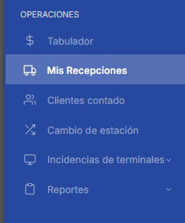
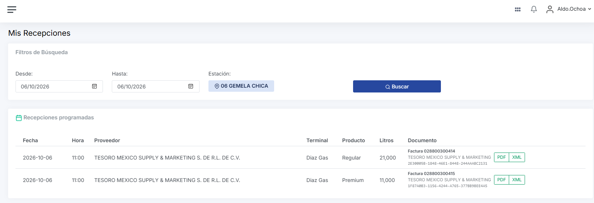
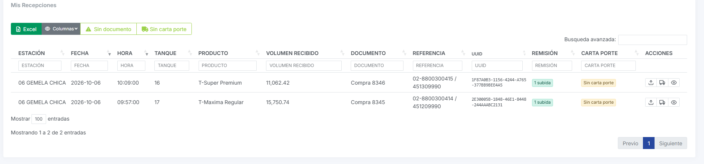
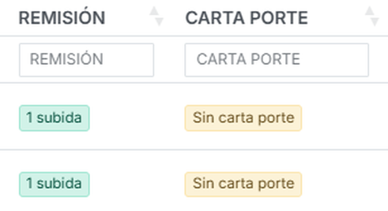
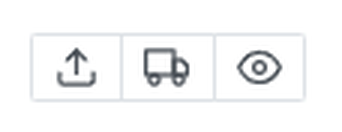
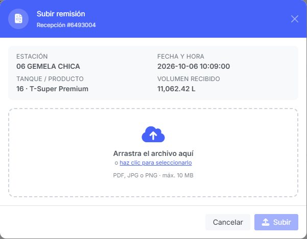
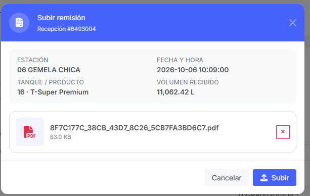
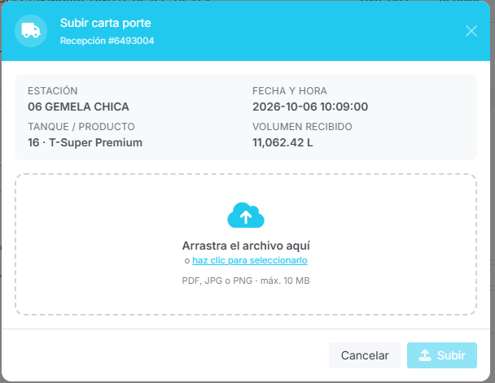
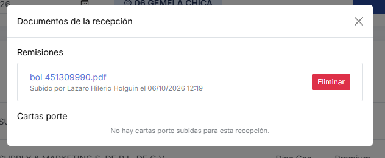
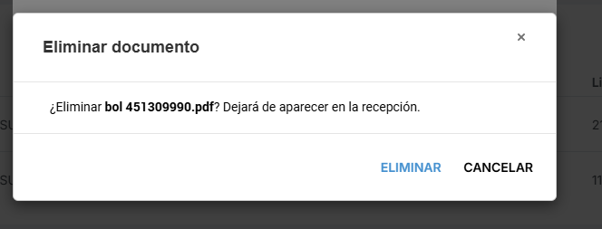

Para el personal de estación · Pantalla Mis Recepciones del aplicativo TotalGas ·
Última actualización: 14 de octubre de 2026
Contenido
Antes de empezar
Resumen rápido
Paso a paso: entrar, buscar, subir la remisión, subir la carta porte y revisar
Si subiste un archivo equivocado
Mensajes del sistema y qué hacer
Preguntas frecuentes
1. Antes de empezar
Cada vez que llega una pipa y se descarga combustible, la estación debe subir al sistema
dos documentos de esa descarga:
La remisión que entrega el transportista.
La carta porte del viaje.
Necesitas:
Tu usuario y contraseña del aplicativo TotalGas, con tu estación asignada.
La remisión y la carta porte escaneadas o fotografiadas, en PDF, JPG o PNG, de
10 MB como máximo cada una.
Que la descarga ya esté registrada en ControlGas. La lista de descargas sale de ahí.
Consejo para escanear o tomar la foto: que se lea completo (folio, litros, placas, firmas),
derecho y sin sombras. Si la remisión tiene varias hojas, júntalas en un solo PDF. Ponerle al archivo el
número de remisión o de BOL (por ejemplo bol 451309990.pdf) ayuda a encontrarlo después.
2. Resumen rápido
1Entra a Mis RecepcionesMenú lateral → Operaciones.
2Elige las fechas y presiona BuscarAparecen las descargas de tu estación.
3Ubica la descargaPor fecha, hora, tanque y litros.
4Sube la remisiónBotón de la flecha hacia arriba.
5Sube la carta porteBotón del camión.
6Revisa que diga "1 subida"En las columnas REMISIÓN y CARTA PORTE.
1
Entra a Mis Recepciones
Inicia sesión en el aplicativo. En el menú de la izquierda, dentro de OPERACIONES, haz clic en
Mis Recepciones (ícono de camión).

Figura 1. Opción "Mis Recepciones" en el menú.
Si no ves la opción en el menú, tu usuario todavía no tiene acceso. Pide a Sistemas que te lo active.
2
Elige las fechas y presiona Buscar
En Desde y Hasta elige el día o los días que quieres revisar. Al entrar, las dos
fechas vienen con el día de hoy.
La Estación ya aparece fija con el nombre de tu estación; no tienes que elegirla.
Presiona Buscar.

Figura 2. Filtros de búsqueda y, debajo, las recepciones que Abastos programó para tu estación.
Arriba aparece la tarjeta Recepciones programadas: lo que Abastos te programó para esas fechas
(proveedor, terminal, producto y litros). Cuando ya llegó la factura, ahí mismo puedes descargar su
PDF y su XML.
3
Ubica la descarga en la tabla
Más abajo está la tabla Mis Recepciones, con una fila por cada descarga que registró
ControlGas. Identifica la que vas a documentar por su fecha, hora, tanque,
producto y volumen recibido.

Figura 3. Tabla de descargas. Las dos últimas columnas de datos dicen si ya se subieron los documentos.
Cómo saber qué falta
Las columnas REMISIÓN y CARTA PORTE te lo dicen:
1 subida — ya está el documento. Si subiste más de uno dirá
"2 subidas", "3 subidas", etc.
Sin remisión / Sin carta porte
— falta subirlo.

Figura 4. En este ejemplo falta la carta porte de las dos descargas.
4
Sube la remisión
En la columna ACCIONES, al final de la fila de la descarga, hay tres botones:

Figura 5. Botones de la columna ACCIONES.
Botón
Qué hace
⬆ Flecha
Subir la remisión.
🚚 Camión
Subir la carta porte.
👁 Ojo
Ver los documentos ya subidos. Solo aparece cuando la descarga ya tiene alguno.
Haz clic en la flecha hacia arriba. Se abre la ventana azul Subir remisión.
Revisa el recuadro gris: estación, fecha y hora, tanque, producto y volumen. Deben ser los
de la descarga a la que corresponde tu remisión. Si no coinciden, presiona Cancelar
y elige la fila correcta.
Arrastra el archivo al recuadro punteado, o haz clic en "haz clic para seleccionarlo" y búscalo
en tu computadora.

Figura 6. Ventana "Subir remisión" antes de elegir el archivo.

Figura 7. Con el archivo elegido: nombre, tamaño y botón Subir activo.
Revisa que el nombre del archivo sea el correcto. Si te equivocaste, quítalo con la
✕ roja y elige otro.
Presiona Subir. Mientras se sube dice "Subiendo…".
La ventana se cierra sola, aparece el mensaje verde "Remisión subida correctamente" y la
columna REMISIÓN cambia a 1 subida.
El botón Subir se ve deslavado y no responde mientras no hayas elegido un archivo. Es normal.
5
Sube la carta porte
Es igual que la remisión, pero con el botón del camión. La ventana se llama
Subir carta porte y es de color celeste, para que no las confundas.

Figura 8. Ventana "Subir carta porte" (celeste).
Revisa los datos de la descarga en el recuadro gris.
Arrastra o elige el archivo de la carta porte.
Presiona Subir. Verás "Carta porte subida correctamente" y la
columna CARTA PORTE dirá 1 subida.
Fíjate en el color antes de subir:azul = remisión,
celeste = carta porte. Si subes la carta porte en la
ventana azul quedará guardada como remisión y tendrás que eliminarla y volver a subirla.
6
Revisa lo que subiste
Haz clic en el ojo de la fila. Se abre Documentos de la recepción con dos listas,
Remisiones y Cartas porte. De cada archivo se ve quién lo subió y cuándo. Haz clic en el
nombre del archivo para abrirlo en otra pestaña y comprobar que se lee bien.

Figura 9. Esta descarga ya tiene su remisión, pero le falta la carta porte.
Listo cuando la fila dice 1 subida en REMISIÓN y en CARTA PORTE.
Si subiste un archivo equivocado
No se puede reemplazar un archivo; se elimina el equivocado y se sube el bueno.
Haz clic en el ojo de la fila.
Junto al archivo equivocado, presiona Eliminar.
El sistema pregunta si estás seguro. Presiona ELIMINAR para confirmar, o CANCELAR si
te arrepentiste.
Sube el archivo correcto con la flecha o el camión, como en los pasos 4 y 5.

Figura 10. Confirmación antes de eliminar.
Al eliminar, el archivo deja de aparecer en la descarga, pero el sistema guarda quién lo eliminó y cuándo.
Mensajes del sistema y qué hacer
Mensaje
Qué significa y qué hacer
Tipo de archivo no permitido. Usa PDF, JPG o PNG.
Elegiste otro tipo de archivo (Word, Excel, HEIC del iPhone…). Guárdalo o escanéalo como PDF,
o toma una captura en JPG/PNG.
El archivo excede el tamaño máximo de 10 MB.
El archivo pesa demasiado. Escanéalo con menor resolución o en blanco y negro, o súbelo como foto JPG.
Selecciona ambas fechas. / La fecha "Desde" no puede ser posterior a "Hasta".
Revisa las fechas de búsqueda: deben estar las dos y "Desde" debe ser igual o anterior a "Hasta".
Recuadro amarillo: "Tu usuario no tiene una estación asignada…"
Tu usuario no está ligado a tu estación. Pide a Sistemas que te la asignen.
No aparecen los botones de flecha y camión.
Tu usuario solo puede consultar. Pide a Sistemas el permiso para subir documentos.
No tienes permiso para subir documentos.
Igual que el anterior: pide el permiso a Sistemas.
La recepción no existe o no pertenece a esta estación.
La descarga cambió en ControlGas mientras tenías la pantalla abierta. Presiona
Buscar otra vez e inténtalo de nuevo. Si sigue, avisa a Abastos.
Error al subir el archivo. Intenta nuevamente.
Se cortó la conexión. Revisa el internet y vuelve a presionar Subir.
Error al registrar el documento… / Error al guardar el archivo…
Falla del servidor. Intenta más tarde y, si se repite, avisa a Sistemas.
No se pudieron cargar las recepciones. Intente nuevamente.
No se pudo consultar ControlGas en ese momento. Espera un momento y presiona Buscar otra vez.
Preguntas frecuentes
No aparece la descarga que acabo de recibir.
La tabla muestra las descargas que ya están registradas en ControlGas. Si todavía no se registra ahí,
no aparece y no se le pueden subir documentos. Revisa también que las fechas de búsqueda incluyan el día
de la descarga.
¿Puedo subir más de un archivo a la misma descarga?
Sí. Por ejemplo, si la remisión viene en dos fotos, súbelas una por una; la columna dirá "2 subidas".
Aun así, es mejor juntarlas en un solo PDF.
Una pipa descargó en dos tanques. ¿Subo los documentos dos veces?
Cada tanque aparece como una fila distinta. Sube la remisión y la carta porte en cada fila de esa
descarga para que ninguna quede en amarillo.
¿Qué significa "Sin XML" en la columna UUID?
Que la compra de esa descarga todavía no tiene el XML de la factura cargado en ControlGas. No tiene que
ver con la remisión ni con la carta porte.